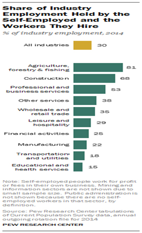

Do you have an on-boarding process for consultants who are engaging in new projects?
Conduuit’s on-boarding process for Lone Eagle engagements will require the standard background investigation (1 to 2 week process). This process entails the criminal, drug, and educational checks. Conduuit uses e-verify for employment verification.
Do you provide evidence of the client-bill rate to your consultants?
Conduuit operates in a full transparent manners. Rates charged to client is made readily available to the self-employed consultant (Lone Eagle). The amount retained by Conduuit is dependent on the services offered by Conduuit and selected by the Lone Eagle.
How often do you pay your consultants? What are the standard terms?
As part of its base services, Conduuit pays its Lone Eagles on a weekly basis. Provide an approved timesheet and get paid the following week. No invoicing or the painful Net30 or Net60 terms.
What if the consultant does not want a packaged service and only wants the project and weekly payment?
Lone Eagle can also choose to forego all of the other services offered in the base service package and only obtain the weekly cash flow services. In this case, the Lone Eagle keeps 94% of the client bill rate.
Will you make your consultants sign a non-compete agreements or other restrictive agreements?
Conduuit does not impose a non-compete agreement on any of its Lone Eagles. You are free to leave or convert at any time of your choosing.
As a seasoned professional with close to 2 decades of experience in the industry as an employee and as a self-employed consultant, it seems like I’m working more hours, but not necessarily making more money. Why is that? Am I the norm or the exception?
Unfortunately, you are the norm. According to the Economic Policy Institute, workers have produced much more, but typical workers’ pay has lagged far behind over the last 40 years. Compensation for the vast majority lagged further and further behind overall productivity. From 1973 to 2013, hourly compensation of a typical (production/nonsupervisory) worker rose just 9 percent while productivity increased 74 percent. This breakdown of pay growth has been especially evident in the last decade, affecting both college- and non-college-educated workers as well as blue- and white-collar workers. This means that workers have been producing far more than they receive in their paychecks and benefit packages from their employers. Companies are making record profits, but employees and contractors are often not reaping those rewards. For consultants, the practice of Layer-cake contracting isn’t helping either.
Do I need Liability Insurance as a self-employed consultant?
Yes. 7 out of 10 businesses don’t buy Employment Practices Liability Insurance. Leveraging Conduuit, you and your client are covered. Did you know that 6 out of 10 businesses think they are protected under other policies? Don’t expose yourself and your client to this risk. Conduuit will ensure you have the proper coverage for you and your client.
For government related projects, what do Federal Acquisition Regulations (FAR) say about self-employed consultants working on a contract?
FAR provision for government-related businesses states that subcontracts may be unallowable when the total subcontracted content of a contract or individual delivery order exceeds 70% of the total cost.
How much lower is the pay for H1-B visa workers in the Business and IT sector?
H1-B Visa contractors obtain receive an average of 36 to 41% lower wages
I’m a self-employed consultant working for a large financial organization through a “preferred vendor”. Can you tell me how much of the hourly rate the vendor charges for my services goes in their pocket?
Self-Employed Contractors and Consultants receive an average of 50% to 65% of the total hourly rate paid by client. Vendors who serve as the middlemen receive the remaining 35% to 50% for being a mere pass-through. We call this Layer-cake contracting and abhor this practice. The contracting resources performing the actual work are progressively getting less and less of the compensation.
Are there any trade-offs that employers are providing in exchange for the cuts?
As the benefits are getting cut, most employees are not realizing any trade-offs. More than two out of every five workers, or 41%, have had their pay raises suspended and another 23% said their bosses have stopped giving performance bonuses, according to the NEFE survey. Additionally, over 25% surveyed said that their companies have cut back on their 401(k) match and 13% said their employer stopped matching altogether.
Benefits are important to me. In determining whether or not I want to become a self-employed worker, what are the trends for large organizations and their employee benefits plan?
By 2017, cost and competitive pressures are expected to prompt more than 50% of large Fortune 1000 organizations toward dropping health care coverage altogether, according to the study by Corporate Executive Board, a Washington DC based research firm.
Can you provide a breakdown of the types of occupations for these self-employed workers?
DFPE-AFLCIO noted that overall, 12 percent of the management, professional, and related U.S. workforce were self-employed in September 2013. Another nearly 480,000 workers reported being self-employed in a second job; 58 percent were self-employed in management, professional, or related occupations.
Employers seem to be cutting benefits more and more. And what they provide seems to cost more. Is this the industry norm?
Over the past 5 years, 40% of working adults have seen their employer-sponsored benefits reduced or eliminated entirely, according to a survey by the National Endowment for Financial Education (NEFE).
Hourly wages remain low even though it seems companies are doing well. Why is that?
According to a 2015 report issued by the Economic Policy Institute, a pro-labor think tank based in Washington, D.C., “ever since 1979, the vast majority of American workers have seen their hourly wages stagnate or decline. This is despite real GDP growth of 149 percent and net productivity growth of 64 percent over this period.”
How many are self-employed in their main job, as opposed to having a side business outside of their main job?
DFPE-AFLCIO reported that in September 2013, there were just over 15.5 million workers in the U.S. who reported being self-employed in their main job; 46 percent of them worked in management, professional, and related occupations (7.2 million self-employed professional workers).
How many jobs have been lost over the last 10 to 15 years with the larger establishments?
United States Bureau of Labor Statistics data shows that between 2002 and 2012, there was a loss of 2.3 million private jobs in establishments with 100 or more employees. Establishments with 500 or more employees experienced a reduction of 1.8 million jobs, 80 percent of the large establishment (100 and over) losses.
How many of the self-employed / independent contractors are incorporated businesses?
According to the Bureau of Labor Statistics 14.4 million Americans were self-employed in January 2015. Of those, 9.2 million were unincorporated self-employed workers and another 5.2 million were incorporated.
How many people work for self-employed or micro-businesses (1 to 5 employees)?
According to a Pew Research Center analysis of data the U.S. Census Bureau, self-employed Americans and the workers they hired accounted for 44 million jobs in 2014, or 30% of the national workforce. The self-employed, 14.6 million in all, represented 10% of the nation’s 146 million workers, and they in turn provided jobs for 29.4 million other workers.
It seems like there are more independent contractors in the workforce today. Is this correct?
According to research by Economic Modeling Specialists International, the number of people who primarily work on their own has swelled by 1.3 million since 2001 to 10.6 million, a 14% increase.
It seems like working as a contingent worker often means no retirement plan. What are the statistics out there that support or refute that?
The 2005 contingent worker supplement showed that 51 percent of contingent workers in management, professional, and related occupations had a pension plan or individual retirement plan/Keogh plan. In 2012, among all management, professional, and related workers, 83 percent had access to a retirement plan (73 percent actually participated).
My current employer has had record growth, yet the employees are not seeing much of it. What should the median household income be if it were to keep pace with the economy?
Productivity has surged, but income and wages have stagnated for most Americans. If the median household income had kept pace with the economy since 1970, it would now be nearly $92,000, not $50,000.
What are the statistics for industries and the percentage of self-employed workers they hire?
Share of Industry Employment Held by the Self-Employed and the Workers They Hire.

What has been the growth for wage and salary employment ?
Total wage and salary employment grew by only 105,000 between 2000 and 2011. Government employment, including federal, state and local, grew 1.36 million, while private employment declined by 1.26 million (Figure 1).
What is the biggest driver of these increased costs in benefits that employers are asking employees to shoulder?
According to NEFE, 72% of those surveyed who had benefits cut said that their health insurance coverage was the hardest hit. Employees are required to shoulder more costs, including higher deductibles and co-pays, as well as more expensive premiums. In 2012, worker out-of-pocket costs rose 5.8% to an average of $3,470 for a typical family of four, according to data compiled by independent acutarial and health care consulting firm Milliman Inc.
Where has the largest growth been in employment over the last 10 to 15 years?
In 1970, proprietors were 11.0 percent of employment, a figure that rose to 15.6 percent by 2000. The greatest increase occurred after 2000, when the number of proprietors increased 42 percent. In 2011, proprietors represented 21 percent of employment, nearly double their proportion in 1970 (Figure 3).